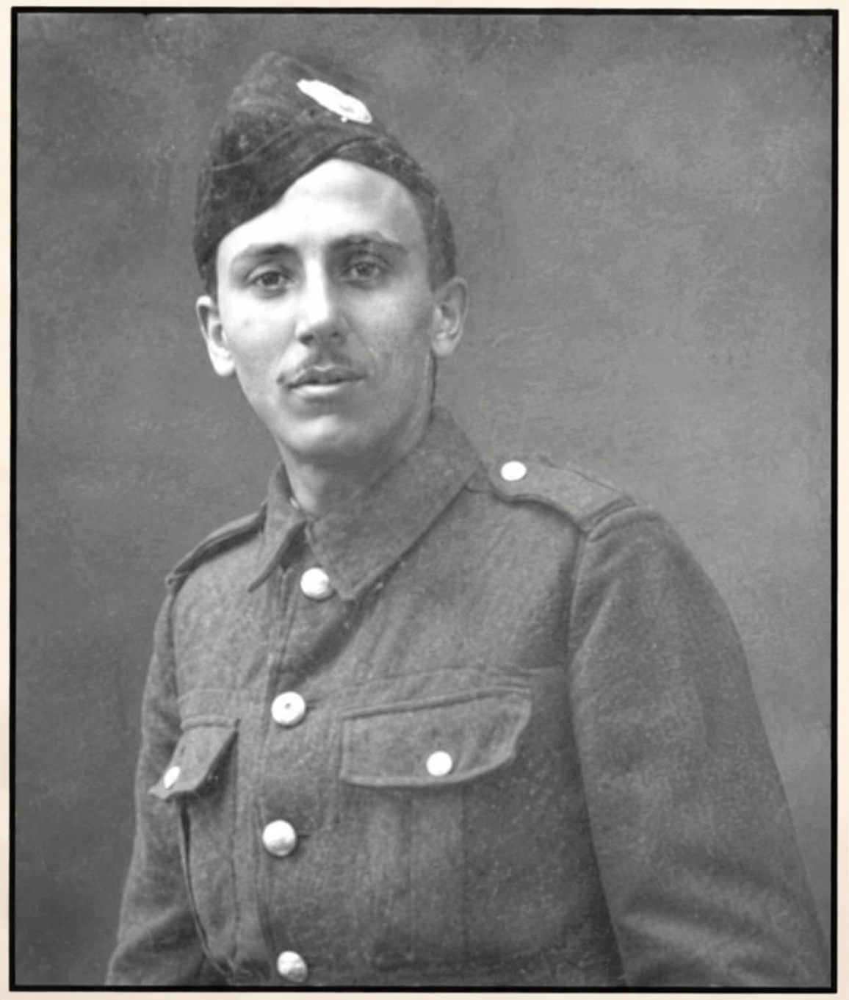

William Reginald “Bill” Abbati

William Reginald Abbati entered the world on 26 September 1895, born in Highbury, London, to Camille and Mathilde Abbati — a cosmopolitan couple whose lives had begun far from England. Camille, born in Syra (Syros), Greece, worked as a steamship broker in grain, while Mathilde, born in Genoa, Italy, kept the household running. Their home in 1911 stood at 79 Harrow View, Wealdstone, a place filled with the noise and energy of four children: Margaret, Henry, Alfred, and the youngest, William — known variously as Bill or Willie in early records.
Bill’s childhood was ordinary in the way that only hindsight can make extraordinary. He attended the Lower School of John Lyon in Harrow, a quiet boy with a sharp mind and a future that seemed to be pointing toward engineering. In January 1913, he passed both the College Engineering Matriculation and the University Matriculation examinations, earning a place at University College London. But the promise of his academic life faltered quickly. His eyesight — poor enough to interrupt his studies — forced him to withdraw later that same year.
As the UCL records note, “It was his great ambition to get to the Front.”
Despite his eyesight, he enlisted in the London Scottish Regiment as a private in September 1914. Three months later, he was gazetted as a Second Lieutenant in the 3rd Battalion, Essex Regiment, posted to Harwich. Harwich was not the Somme, nor Ypres, nor Gallipoli. It was a coastal posting, a place of training, shortages, and strain. The early war years were harsh even for those who never crossed the Channel. As the College Records describe, “In these early days of the War, owing to shortage of materials, service was unavoidably under very trying conditions.”
t was there that Bill’s health began to fail. Bronchitis struck first. He partially recovered, but insisted on cutting short his convalescence leave — a decision that proved fatal. A relapse followed, developing into septic poisoning of the lung. He continued to serve until he could no longer stand, finally relinquishing his commission on medical grounds in April 1916. By summer, his condition was hopeless. Bill was transferred to the Osborne Convalescent Home for Officers on the Isle of Wight, a place intended for recovery but, for him, a final refuge. He died there on 9 August 1916 (though some records list 7 August), aged just twenty. His grave at Cowes (Kingston) Cemetery marks the date clearly: 9/8/1916.
He never reached the Front. He never saw battle. His death was not caused by wounds received in action, a fact confirmed repeatedly in the records — UCL, cemetery documents, and the University of London OTC Roll of the Fallen. Yet his name appears on memorials, including those at John Lyon School and the University of London Officers’ Training Corps. His surname is sometimes misspelled — Abatti instead of Abbati — but the man behind the name remains the same: a young officer who served, suffered, and died in uniform.
His story is not one of heroics on the battlefield, but of determination, loyalty, and the quiet tragedy of a life cut short by illness in wartime.
In the end, Bill Abbati belonged to a generation whose sacrifices took many forms — not all of them made under fire. He was twenty years His story is not one of heroics on the battlefield, but of determination, loyalty, and the quiet tragedy of a life cut short by illness in wartime. old. He had no wife, no children, and no medals earned in battle. But he had a family who mourned him, a school that remembered him, and a university that recorded his ambition and his service. His life, though brief, left a trace — in census pages, in college records, in a gravestone on the Isle of Wight — and now, in this story drawn from the facts he left behind.